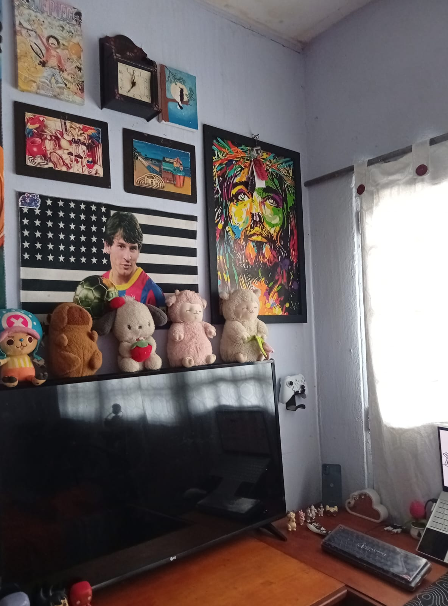

Cada rincón guarda algo que me diste, un recuerdo de nosotros y una razón para sentirte cerca.

Este cuarto tambien es un poco tuyo amor.
Tal vez para alguien más estas cosas sean solamente cuadros, figuras, peluches o decoraciones. Para mí no lo son amor.
Cada una guarda un momento diferente de nosotros amor, algo que hicimos juntos a pesar de la distancia, uno de tus gustos que terminamos compartiendo, un regalo de cuando apenas comenzábamos o algo que lleva tanto tiempo acompañándome que ya forma parte de mi vida diaria amor.
Antes mi cuarto era solamente el lugar en el que dormía, jugaba y pasaba el tiempo pero afortunadamente poco a poco empezaste a llenarlo de detalles, recuerdos y pequeñas partes de ti. Ahora puedo mirar prácticamente cualquier rincón y encontrar algo que me recuerde a nosotros y no puedo negar que aunque no soy bueno para recibir regalos eso me hace feliz amor.
Por eso quería que pudieras entrar aquí, aunque fuera de esta manera para descubrir lo importante que es para mí cada cosa que me has dado amor.
La distancia podrá impedir que estés físicamente en mi cuarto pero de alguna manera ya estás presente en todas partes siempre siempre amor.
Con amor, Moi